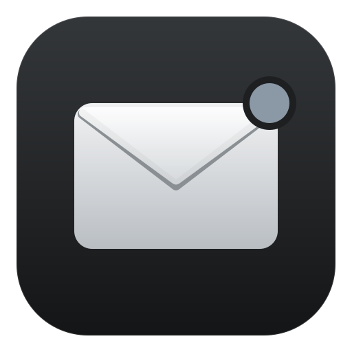
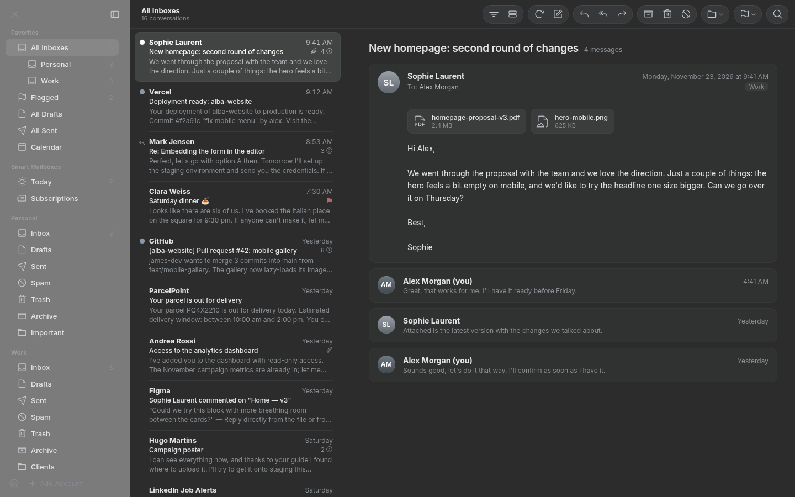

Nimbo
Mail
A fast, minimal and private
email client for Linux
IMAP / SMTP
Tracking protection
Offline translation
Calendar invites
1-click unsubscribe
Local cache

Free software · GPL-3.0 · github.com/hxst1/nimbomail